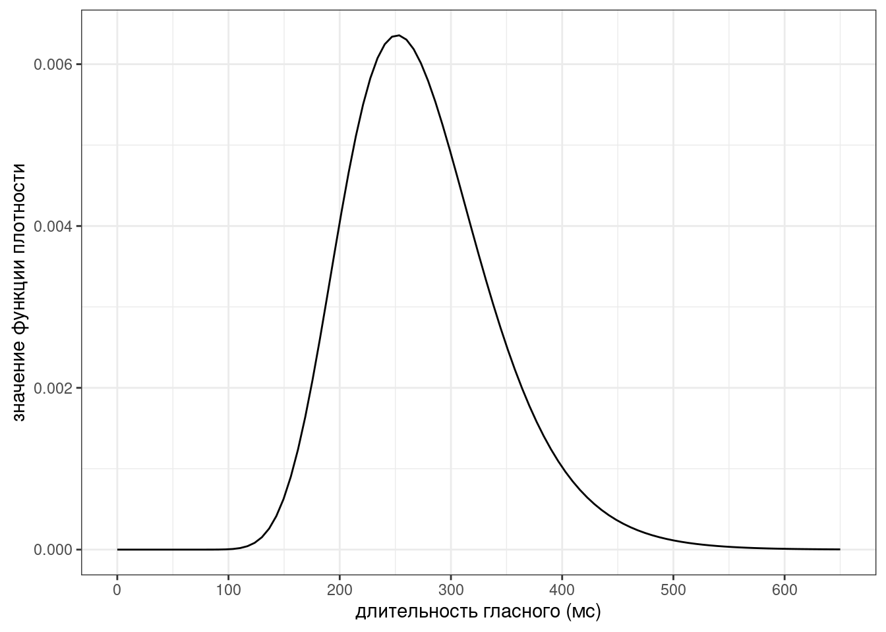
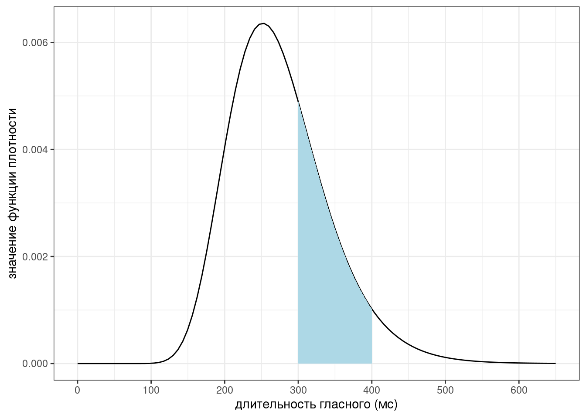
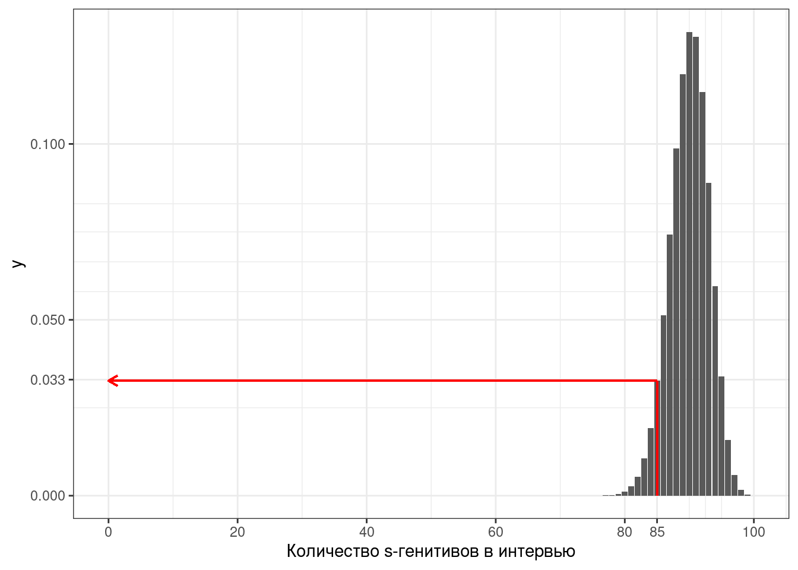
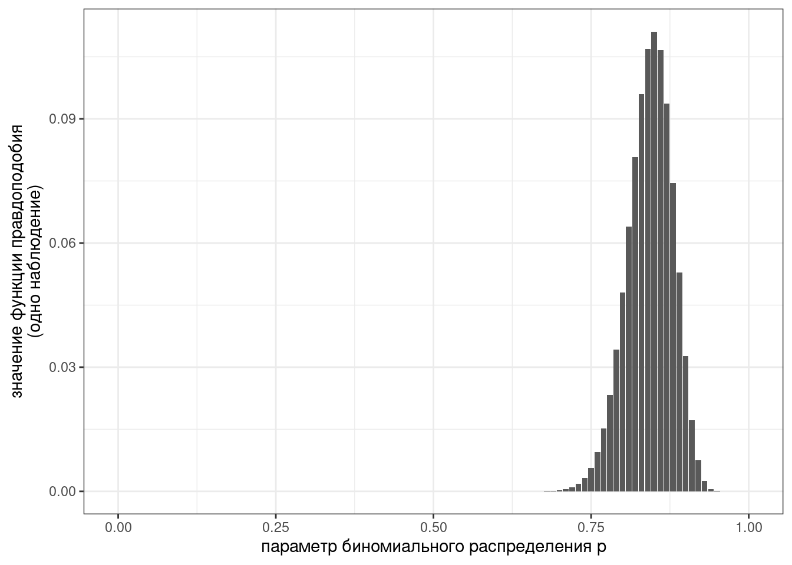
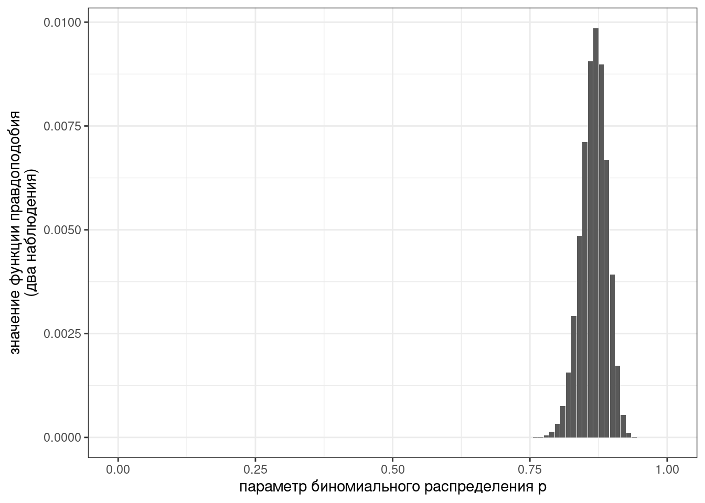
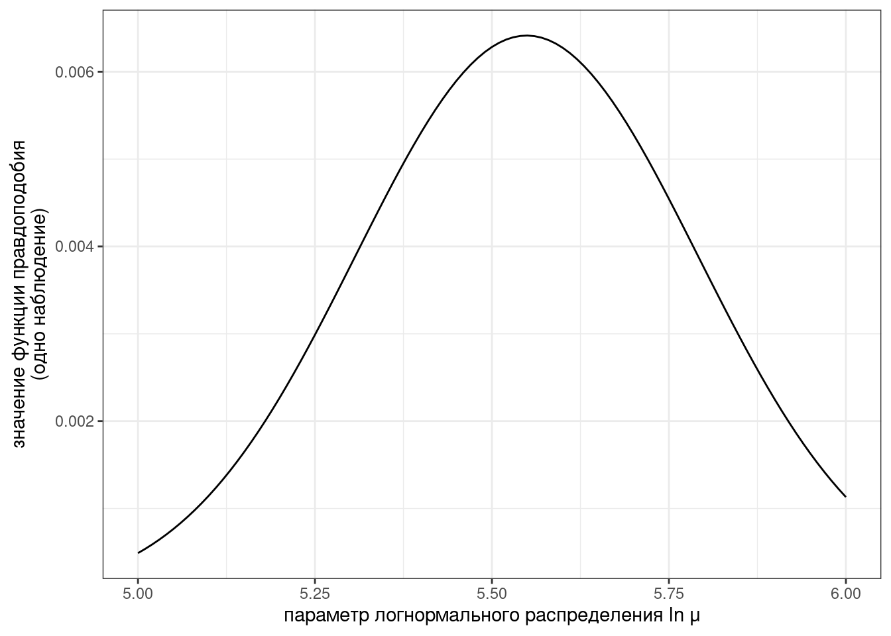
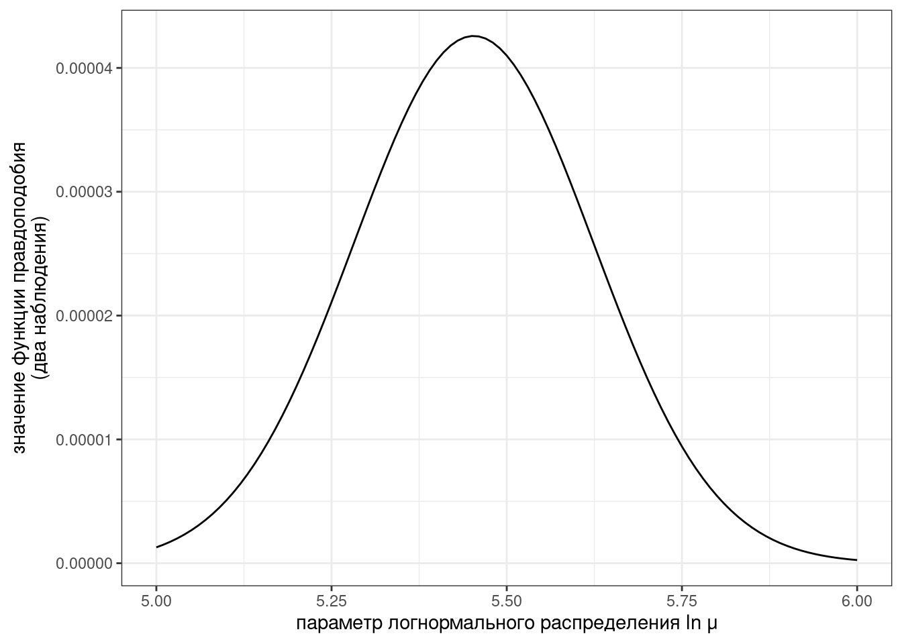
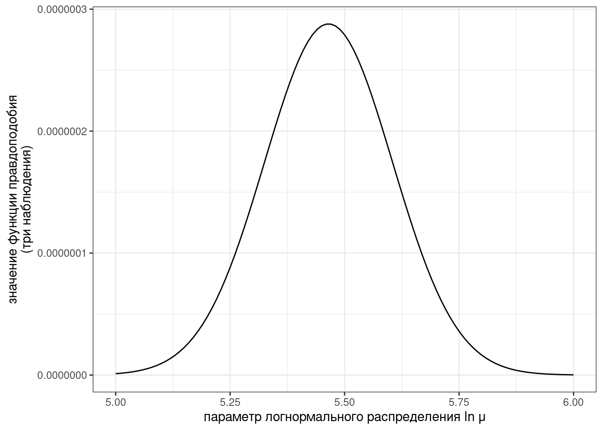
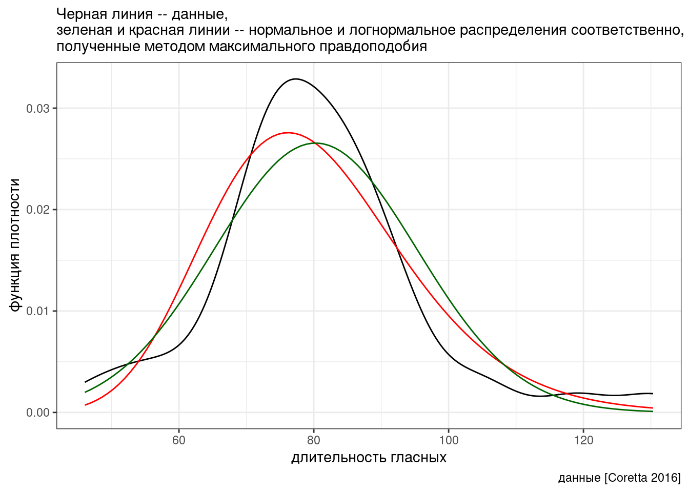
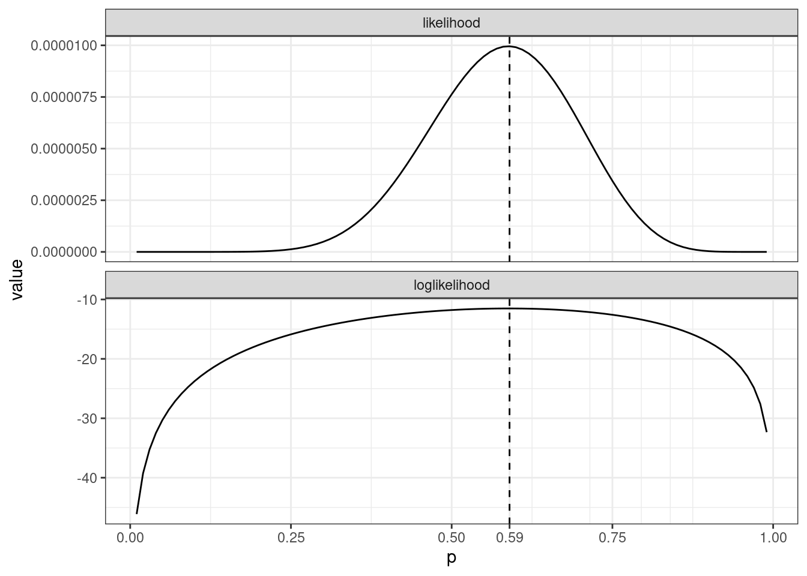

3 Метод максимального правдоподобия
3.1 Оценка вероятности
library(tidyverse)Когда у нас задано некоторое распределение, мы можем задавать к нему разные вопросы. Например, если мы верим что длительность гласных американского английского из (Hillenbrand et al. 1995) можно описать логнормальным распределением с параметрами \(\ln{\mu} =\) 5.587 и \(\ln{\sigma} =\) 0.242, то мы можем делать некотрые предсказания относительно интересующей нас переменной.
ggplot() +
stat_function(fun = dlnorm, args = list(mean = 5.587, sd = 0.242))+
scale_x_continuous(breaks = 0:6*100, limits = c(0, 650))+
labs(x = "длительность гласного (мс)",
y = "значение функции плотности")
Если принять на веру, что логнормальное распределение с параметрами \(\ln{\mu} =\) 5.587 и \(\ln{\sigma}=\) 0.242 описывает данные длительности гласных американского английского из (Hillenbrand et al. 1995), то какова вероятность наблюдать значения между 300 и 400 мс? То же самое можно записать, используя математическую нотацию:
\[P\left(X \in [300,\, 400] | X \sim \ln{\mathcal{N}}(\ln{\mu} = 5.587, \ln{\sigma}=0.242)\right) = ??\] Ответ округлите до трех и меньше знаков после запятой.

Если принять на веру, что биномиальное распределение с параметрами \(p =\) 0.9 описывает, согласно (Rosenbach 2003: 394) употребление s-генитивов в британском английском, то какова вероятность наблюдать значения между 300 и 350 генитивов в интервью, содержащее 400 генитивных контекстов? То же самое можно записать, используя математическую нотацию:
\[P\left(X \in [300,\, 350] | X \sim Binom(n = 400, p = 0.9)\right) = ??\] Ответ округлите до трех и меньше знаков после запятой.
3.2 Функция правдоподобия
Если при поиске вероятностей, мы предполагали, что данные нам неизвестны, а распределение и его параметры известны, то функция правдоподобия позволяет этот процесс перевернуть, запустив поиск параметров распределения, при изветсных данных и семье распределения:
\[L\left(X \sim Distr(...)|x\right) = ...\]
Таким образом получается, что на основании функции плотности мы можем сравнивать, какой параметр лучше подходит к нашим данным.
Для примера рассмотрим наш s-генетив: мы провели интервью и нам встретилось 85 s-генетивов из 100 случаев всех генетивов. Насколько хорошо подходит нам распределение с параметром p = 0.9?

Ответ:
dbinom(85, 100, 0.9)[1] 0.03268244Представим теперь это как функцию от параметра p:
tibble(p = seq(0, 1, by = 0.01)) %>%
ggplot(aes(p)) +
stat_function(fun = function(p) dbinom(85, 100, p), geom = "col")+
labs(x = "параметр биномиального распределения p",
y = "значение функции правдоподобия\n(одно наблюдение)")
А что если мы располагаем двумя интервью одного актера? В первом на сто генитивов пришлось 85 s-генитивов, а во втором – 89. В таком случае, также как и с вероятностью наступления двух независимых событий, значения функции плотности перемножаются.
dbinom(85, 100, 0.9)*dbinom(89, 100, 0.9)[1] 0.003917892tibble(p = seq(0, 1, by = 0.01)) %>%
ggplot(aes(p)) +
stat_function(fun = function(p) dbinom(85, 100, p)*dbinom(89, 100, p), geom = "col")+
labs(x = "параметр биномиального распределения p",
y = "значение функции правдоподобия\n(два наблюдения)")
В итоге:
- вероятность — P(data|distribution)
- правдоподобие — L(distribution|data)
Интеграл распределения/сумма значений вероятностей равен/на 1. Интеграл распределения/сумма значений правдоподобия может быть не равен/на 1.
3.3 Пример с непрерывным распределением
Мы уже обсуждали, что длительность гласных американского английского из (Hillenbrand et al. 1995) можно описать логнормальным распределением с параметрами \(\ln\mu\) и \(\ln\sigma\). Предположим, что \(\ln\sigma = 0.342\), построим функцию правдоподобия для \(\ln\mu\):
vowels <- read_csv("https://raw.githubusercontent.com/agricolamz/2022_da4l/master/data/phonTools_hillenbrand_1995.csv")
tibble(ln_mu = seq(5, 6, by = 0.001)) %>%
ggplot(aes(ln_mu)) +
stat_function(fun = function(ln_mu) dlnorm(vowels$dur[1], meanlog = ln_mu, sdlog = 0.242))+
labs(x = "параметр логнормального распределения ln μ",
y = "значение функции правдоподобия\n(одно наблюдение)")
tibble(ln_mu = seq(5, 6, by = 0.001)) %>%
ggplot(aes(ln_mu)) +
stat_function(fun = function(ln_mu) dlnorm(vowels$dur[1], meanlog = ln_mu, sdlog = 0.242)*dlnorm(vowels$dur[2], meanlog = ln_mu, sdlog = 0.242))+
labs(x = "параметр логнормального распределения ln μ",
y = "значение функции правдоподобия\n(два наблюдения)")
tibble(ln_mu = seq(5, 6, by = 0.001)) %>%
ggplot(aes(ln_mu)) +
stat_function(fun = function(ln_mu) dlnorm(vowels$dur[1], meanlog = ln_mu, sdlog = 0.242)*dlnorm(vowels$dur[2], meanlog = ln_mu, sdlog = 0.242)*dlnorm(vowels$dur[3], meanlog = ln_mu, sdlog = 0.242))+
labs(x = "параметр логнормального распределения ln μ",
y = "значение функции правдоподобия\n(три наблюдения)")
Для простоты в начале я зафиксировал один из параметров логнормального распредления: лог стандартное отклонение. Конечно, это совсем необязательно делать: можно создать матрицу значений лог среднего и лог стандартного отклонения и получить для каждой ячейки матрицы значения функции правдоподобия.
3.4 Метод максимального правдоподобия (MLE)
Функция правдоподобия позволяет подбирать параметры распределения. Оценка параметров распределения при помощи функции максимального правдоподобия получила название метод максимального правдоподобия. Его я и использовал ранее для того, чтобы получить значения распределений для заданий из первого занятия:
- данные длительности американских гласных из (Hillenbrand et al. 1995) и логнормальное распределение
fitdistrplus::fitdist(vowels$dur, distr = 'lnorm', method = 'mle')Fitting of the distribution ' lnorm ' by maximum likelihood
Parameters:
estimate Std. Error
meanlog 5.5870359 0.005935135
sdlog 0.2423978 0.004196453- количество андийских слогов в словах и распределение Пуассона
andic_syllables <- read_csv("https://raw.githubusercontent.com/agricolamz/2022_da4l/master/data/andic_syllables.csv")
andic_syllables %>%
filter(language == "Andi") %>%
uncount(count) %>%
pull(n_syllables) %>%
fitdistrplus::fitdist(distr = 'pois', method = 'mle')Fitting of the distribution ' pois ' by maximum likelihood
Parameters:
estimate Std. Error
lambda 2.782715 0.02128182- Есть и другие методы оценки параметров.
- Метод максимального правдоподобия может быть чувствителен к размеру выборки.
Отфильтруйте из данных с количеством слогов в андийских языках багвалинский и, используя метод максимального правдоподобия, оцените для них параметры модели Пуассона.
В работе (Coretta 2016) собраны данные
длительности исландских гласных. Отфильтруйте данные, оставив
односложные слова (переменная syllables) после
придыхательного (переменная aspiration), произнесенные
носителем tt01 (переменная speaker) и
постройте следующий график, моделируя длительность гласных (переменная
vowel.dur) нормальным и логнормальным распределением. Как
вам кажется, какое распределение лучше подходит к данным? Докажите ваше
утверждение, сравнив значения правдоподобия.

3.5 Логорифм функции правдоподобия
Так как в большинстве случаев нужно найти лишь максимум функции правдоподобия, а не саму функцию \(\ell(x|\theta)\), то для облегчения подсчетов используют логорифмическую функцию правдоподобия \(\ln\ell(x|\theta)\): в результате, вместо произведения появляется сумма1:
\[\text{argmax}_\theta \prod \ell(\theta|x) = \text{argmax}_\theta \sum \ln\ell(\theta|x) \]
Во всех предыдущих примерах мы смотрели на 1-3 примера данных, давайте попробуем использовать функцию правдоподобия для большего набора данных.
Представим, что мы проводим некоторый эксперимент, и у некоторых участников все получается с первой попытки, а некоторым нужна еще одна попытка или даже две. Дополните код функциями правдоподобия и логорифмической функцией правдоподобия, чтобы получился график ниже.
set.seed(42)
v <- sample(0:2, 10, replace = TRUE)
sapply(seq(0.01, 0.99, 0.01), function(p){
...
}) ->
likelihood
sapply(seq(0.01, 0.99, 0.01), function(p){
...
}) ->
loglikelihood
tibble(p = seq(0.01, 0.99, 0.01),
loglikelihood,
likelihood) %>%
pivot_longer(names_to = "type", values_to = "value", loglikelihood:likelihood) %>%
ggplot(aes(p, value))+
geom_line()+
geom_vline(xintercept = 0.33, linetype = 2)+
facet_wrap(~type, scales = "free_y", nrow = 2)+
scale_x_continuous(breaks = c(0:5*0.25, 0.33))
Ссылки на литературу
Это просто свойство логарифмов:
log(5*5) = log(5)+log(5)↩︎